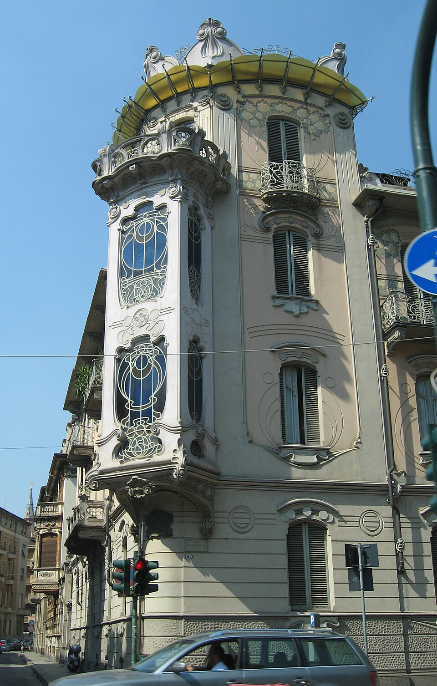

Casa Fenoglio-Lafleur, esterni
Scegli una curva del ferro battuto e usala come motivo del tuo taccuino.
Controlla costo, prenotazione, apertura e accessibilità con il gestore. / Check price, booking, opening and accessibility with the operator.

Scegli una curva del ferro battuto e usala come motivo del tuo taccuino.
Controlla costo, prenotazione, apertura e accessibilità con il gestore. / Check price, booking, opening and accessibility with the operator.